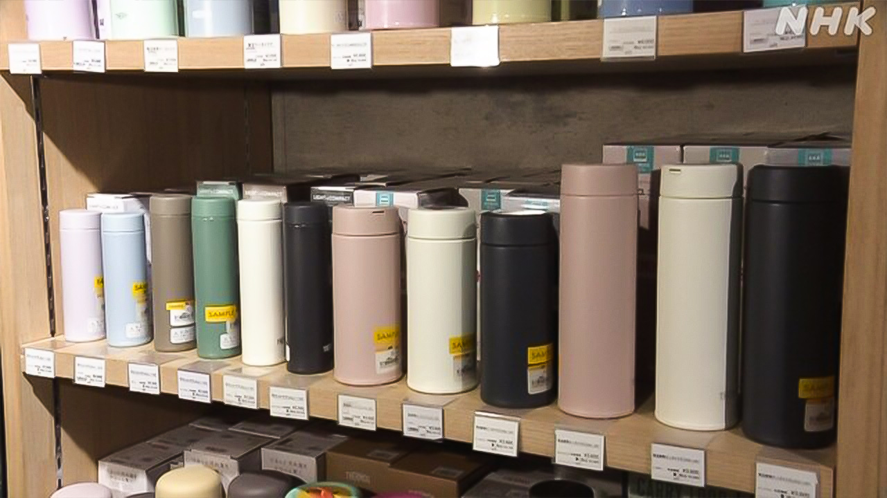

最新ニュース
1️⃣ 高校生が沖縄県の海で亡くなった事故 国が船長を告発
今年3月、沖縄県の海で、船の事故がありました。京都から学校の旅行で来た高校生と船長の2人が亡くなりました。
国は、22日、亡くなった船長について、海上保安庁に調べて欲しいと告発しました。法律に違反しているのではないかと考えています。
法律では、頼まれて人を船に乗せる場合、国に登録しなければなりません。国によると、船長は、登録しないで、3年前から、同じ高校の生徒を船に乗せて、お金をもらっていました。
2️⃣ 水筒や弁当箱がよく売れている

水筒や弁当箱がよく売れています。
多くの物の値段が上がっているため、飲み物や食べ物にお金を使わないようにしている人が、増えているようです。
日本に180の店がある会社では、今月前半の水筒の売り上げが、去年より12％増えました。軽いプラスチックの水筒や小さい水筒がよく売れています。
弁当箱は、売り上げが16％増えました。弁当を冷やすことができる物や、冷凍できる物が人気です。
新しい水筒を探していた男性は「お金やごみのことを考えて、水筒を使うようにしています」と話していました。
3️⃣ ウクライナ 伝統の服を着る「ビシバンカの日」
ウクライナは5月21日、昔から伝わる伝統の服を着る「ビシバンカの日」でした。
ビシバンカは、花や三角などの刺しゅうがある服です。
首都キーウでは、多くの人がビシバンカを着て、広場に集まって、写真を撮っていました。
ウクライナでは、長い間、ロシアの攻撃が続いています。
夫が軍にいる女性は「ビシバンカを着ると、ウクライナ人であることを誇りに思います」と話していました。
スウェーデンから帰ってきた男性は「ふるさとに戻って伝統の服を着ることができて、すばらしい気分です」と話していました。
4️⃣ 「耳できくハザードマップ」 埼玉県で始まった
埼玉県は、ハザードマップの情報を耳できくことができるサービスを始めました。
ハザードマップは、川の水があふれたり山が崩れたりする危険がある場所や、避難する場所などが、わかる地図です。
このサービスは、スマートフォンなどにアプリをダウンロードして使います。自分がいる場所をアプリに入れると、どんな危険があるかや、近くの避難する場所などを、音で教えてくれます。無料で使うことができます。
埼玉県は、目に障害がある人などに、このサービスを知ってもらって、安全に避難してもらいたいと考えています。
- 〜がある / 〜がいる
- 〜から
- 〜について
- 〜ではないか / 〜じゃないか
- 〜ので
- 〜ている / 〜でいる
- 〜によると
- 〜ないで
- 〜ため
- 〜ように
- 〜ようだ / 〜みたいだ
- 〜ようにする
- 〜より
- 〜ことができる
- 〜こと
- 〜や〜など
- 〜など
- 〜らしい
- 〜たり〜たりする
- 〜てくれる / 〜でくれる
- 〜ても / 〜でも
- 〜てもらう / 〜でもらう
vebaev.github.io
Generated: 2026-05-22 12:20:55 UTC